Base R Graphics Cheat Sheet
David Gerard
August 8, 2017
Abstract:
I reproduce some of the plots from Rstudio’s ggplot2 cheat sheet using Base R graphics. I didn’t try to pretty up these plots, but you should.
I use this dataset
data(mpg, package = "ggplot2")One Variable
Continuous
Density plot
density_object <- density(mpg$hwy)
plot(density_object)
Histogram
hist(mpg$hwy, breaks = 10)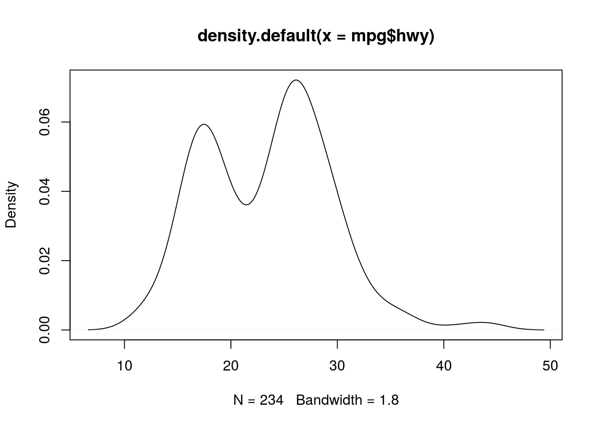
Discrete
Barplot
tabdat <- table(mpg$drv)
barplot(tabdat)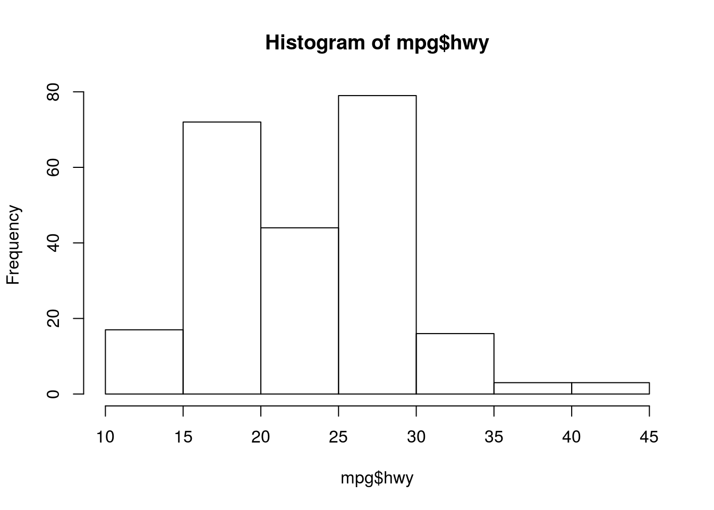
Differnt type of bar plot
plot(tabdat)
Two Variables
Continuous X, Continuous Y
Scatterplot
plot(mpg$cty, mpg$hwy)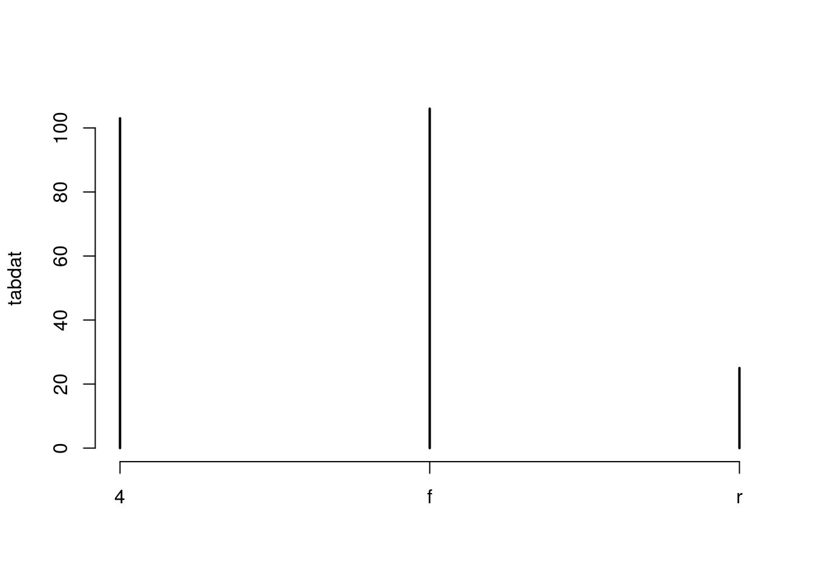
Jitter points to account for overlaying points.
x <- jitter(mpg$cty)
y <- jitter(mpg$hwy)
plot(x, y)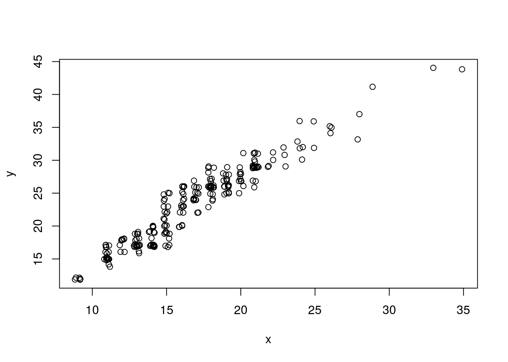
Add a rug plot
plot(x, y)
rug(x, side = 1)
rug(y, side = 2)Add a Loess Smoother
loess_fit <- loess(hwy ~ cty, data = mpg)
xnew <- seq(min(x), max(x), length = 100)
ynew <- predict(object = loess_fit, newdata = data.frame(cty = xnew))
plot(x, y)
lines(xnew, ynew, col = 2, lty = 2)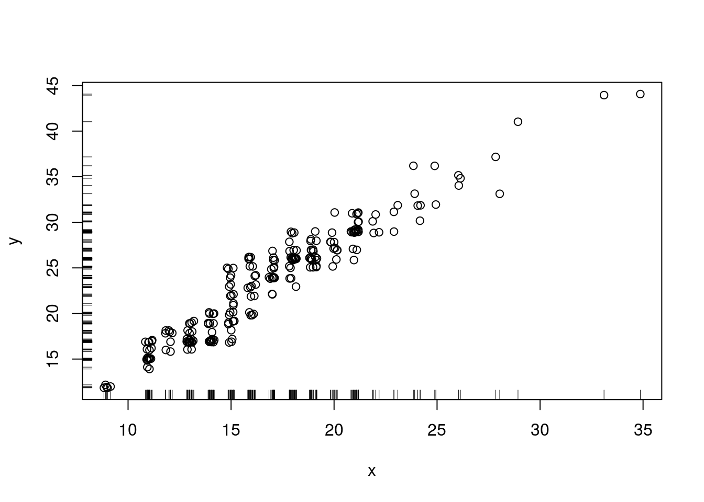
Loess smoother with upper and lower 95% confidence bands
loess_fit <- loess(hwy ~ cty, data = mpg)
xnew <- seq(min(x), max(x), length = 100)
pfit <- predict(object = loess_fit, newdata = data.frame(cty = xnew), se = TRUE)
ynew <- pfit$fit
upper_bound <- pfit$fit + qnorm(0.975) * pfit$se.fit
lower_bound <- pfit$fit - qnorm(0.975) * pfit$se.fit
plot(x, y)
lines(xnew, ynew, col = 2, lty = 2)
lines(xnew, upper_bound, col = 4, lty = 2)
lines(xnew, lower_bound, col = 4, lty = 2)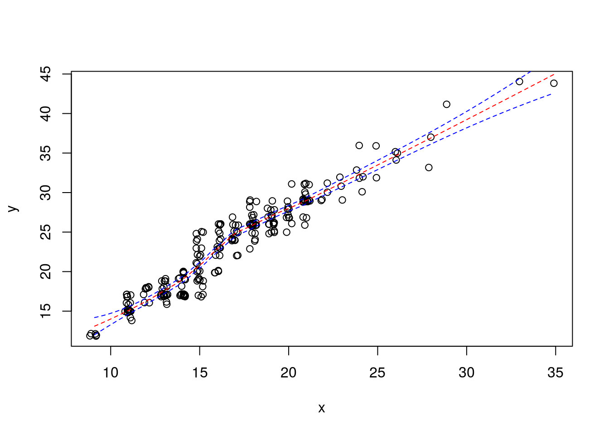
Loess smoother with upper and lower 95% confidence bands and that fancy shading from ggplot2.
loess_fit <- loess(hwy ~ cty, data = mpg)
xnew <- seq(min(x), max(x), length = 100)
pfit <- predict(object = loess_fit, newdata = data.frame(cty = xnew), se = TRUE)
ynew <- pfit$fit
upper_bound <- pfit$fit + qnorm(0.975) * pfit$se.fit
lower_bound <- pfit$fit - qnorm(0.975) * pfit$se.fit
xshade <- c(xnew, xnew[length(xnew):1])
yshade <- c(upper_bound, lower_bound[length(lower_bound):1])
plot(x, y)
lines(xnew, ynew, col = 2, lty = 2)
polygon(xshade, yshade, col = "#0000FF33", border = FALSE)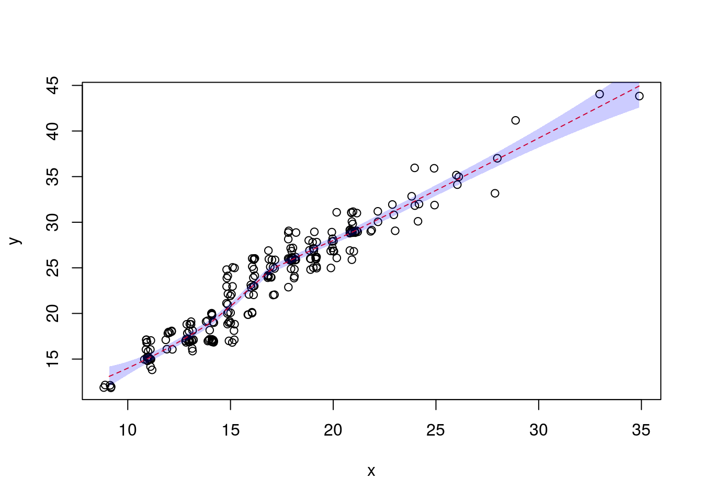
Add text to a plot
plot(x, y)
text(15, 40, "some text")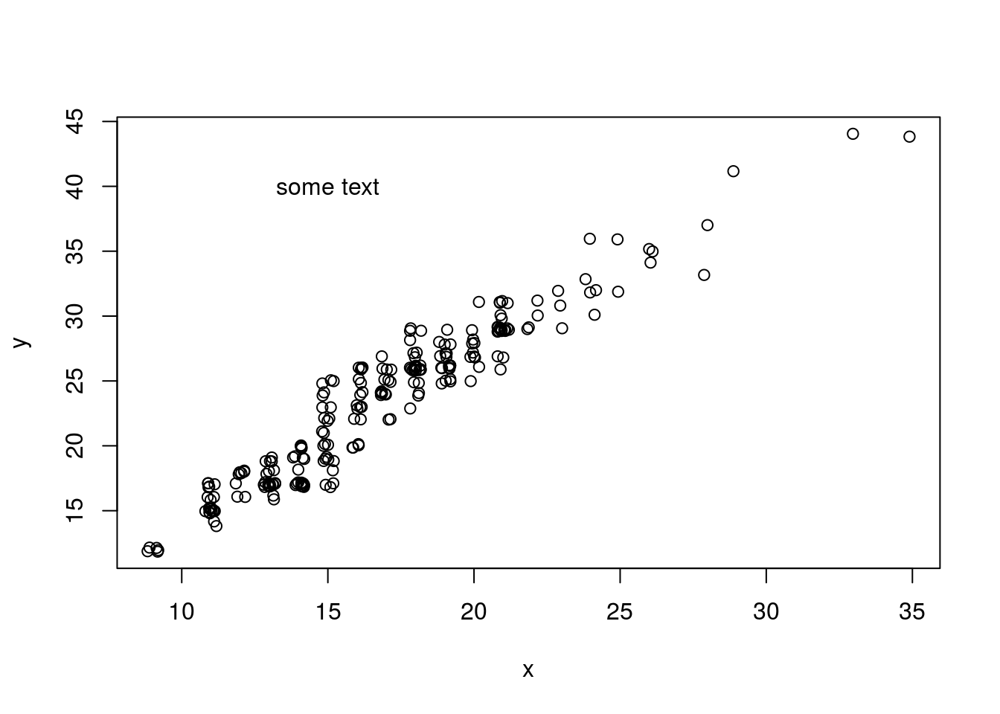
Discrete X, Continuous Y
Boxplot
boxplot(hwy ~ class, data = mpg)Discrete X, Discrete Y
Mosaic Plot
tabdat <- table(mpg$fl, mpg$drv)
mosaicplot(tabdat, color = TRUE)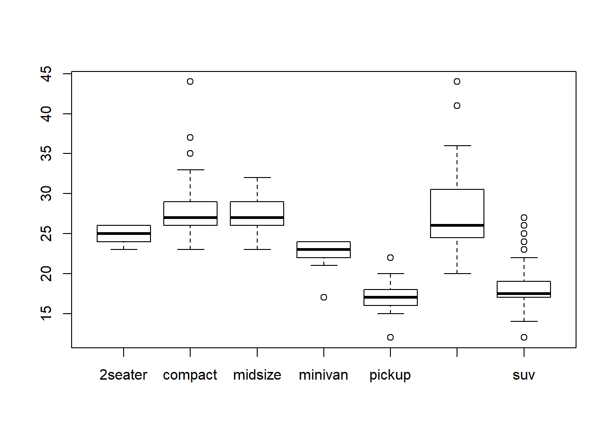
Continuous Function
Line plot
f <- function(x) {
return(x ^ 2)
}
x <- seq(-2, 2, length = 100)
y <- f(x)
plot(x, y, type = "l")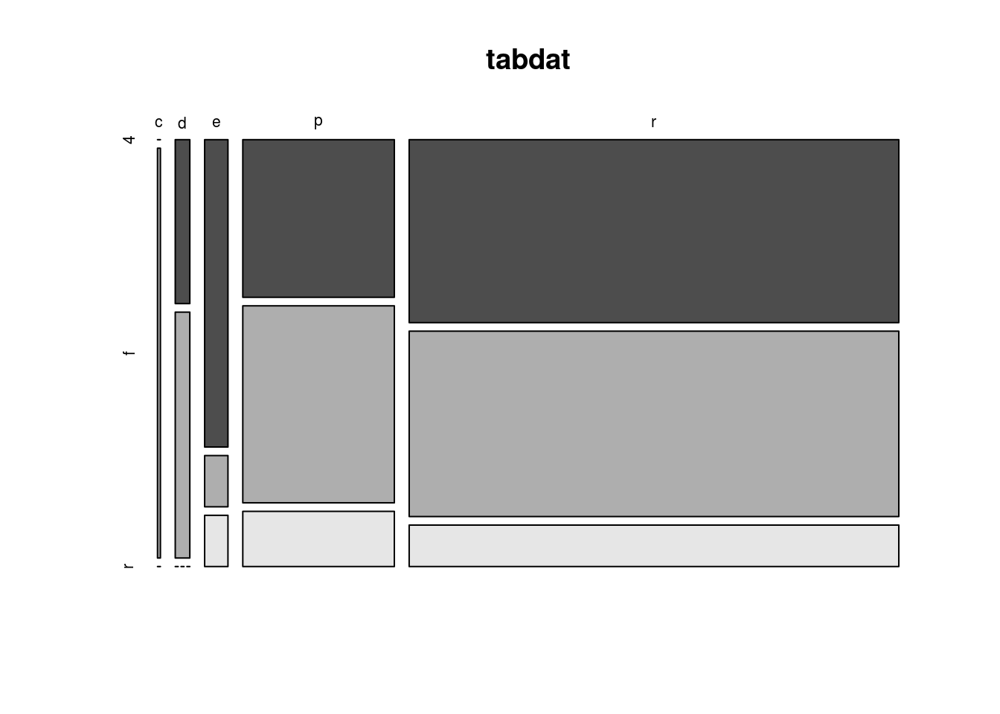
Faceting
par sets the graphics options, where mfrow is the parameter controling the facets.
old_options <- par(mfrow = c(2, 3))
plot(mpg$cty, mpg$hwy)
hist(mpg$cty)
plot(density(mpg$cty))
plot(table(mpg$fl))
barplot(table(mpg$fl))
plot(table(mpg$fl, mpg$drv))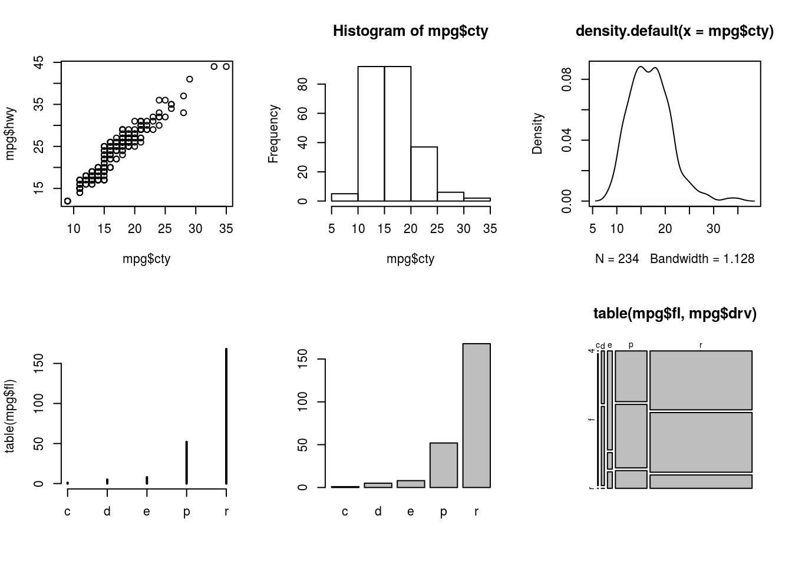
par(old_options)The first line sets the new options and saves the old options in the list old_options. The last line reinstates the old options.
General Considerations
All of these functions have arguments that control the way the plot looks. You should read about these arguments. In particular, read carefully the help page ?plot.default. Useful ones are:
main: This controls the title.xlab,ylab: These control the x and y axis labels.col: This will control the color of the lines/points/areas.cex: This will control the size of points.pch: The type of point (circle, dot, triangle, etc…)lwd: Line width.lty: Line type (solid, dashed, dotted, etc…).
This R Markdown site was created with workflowr